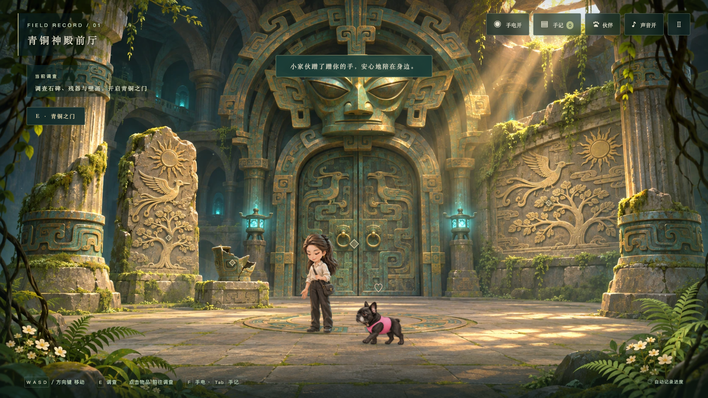
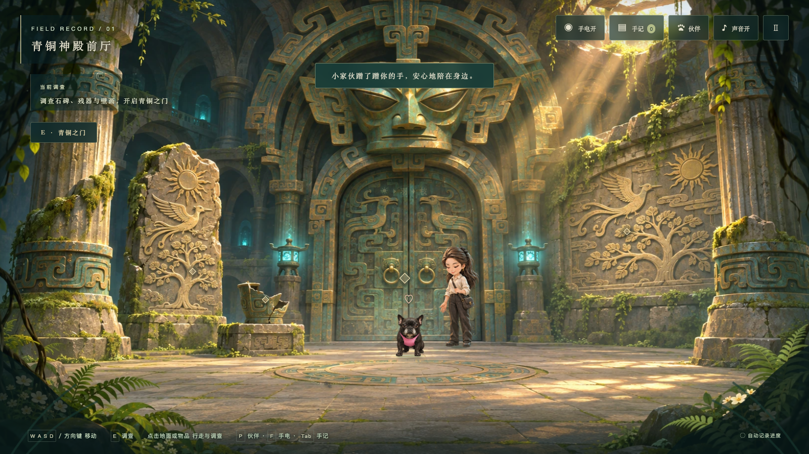
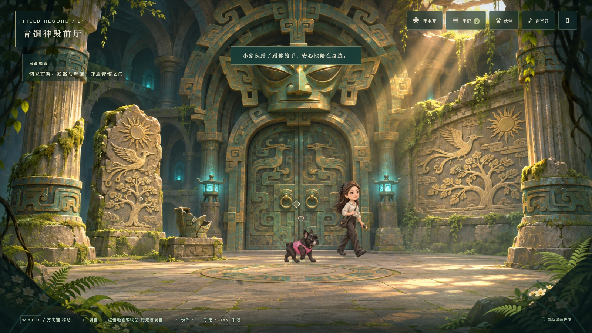
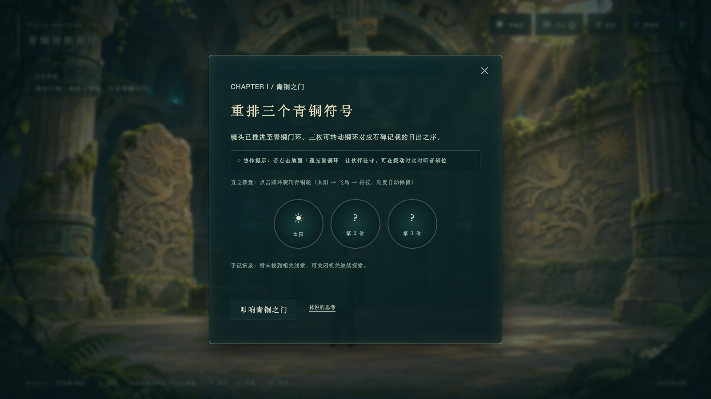
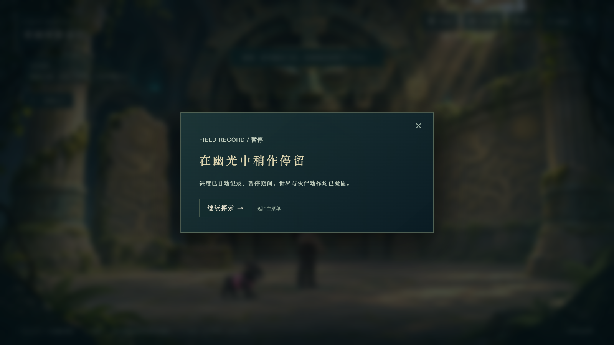
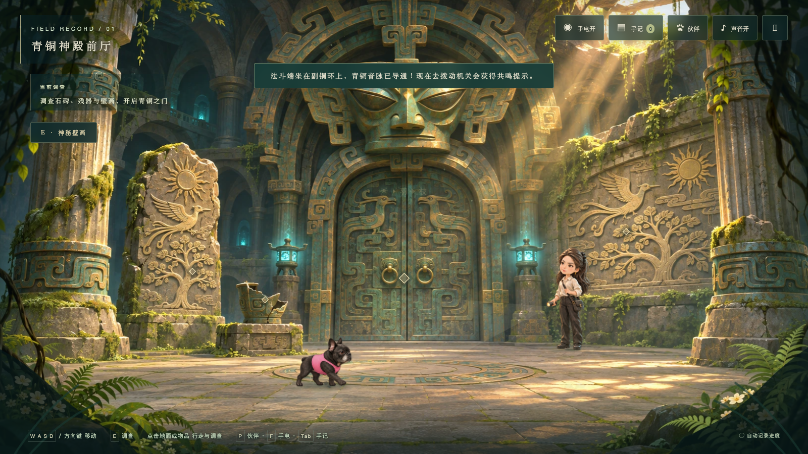
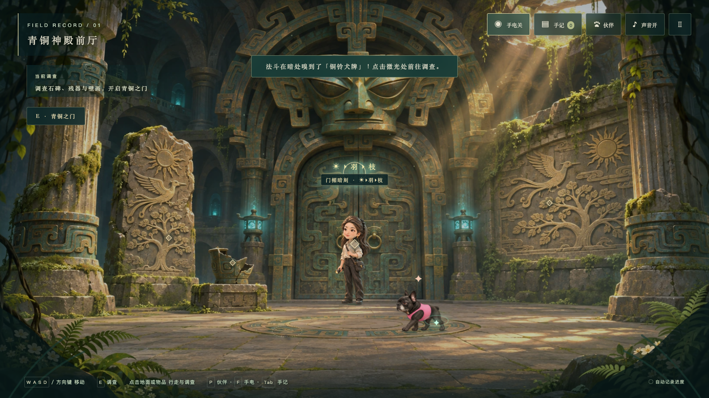
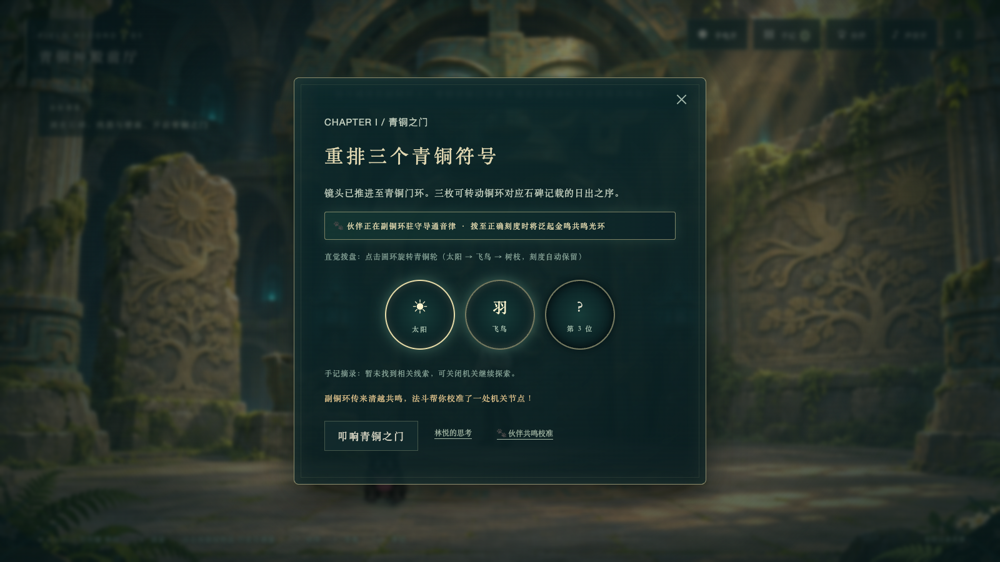
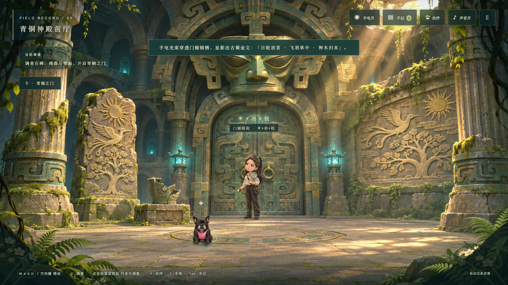
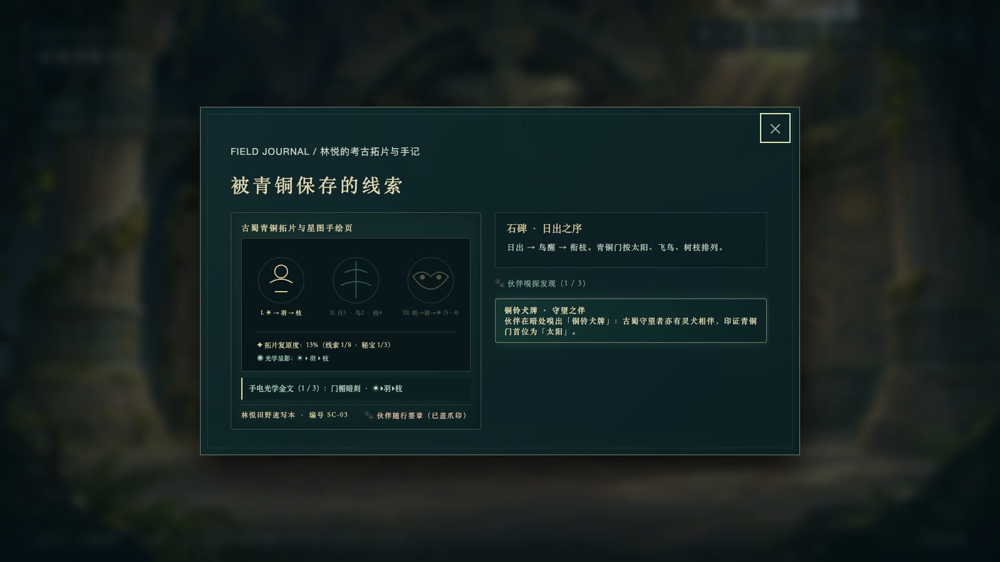

THE EYE OF BRONZE / INTERACTION & CHARACTER AUDIT 05
V5 深度审计与交互精修：让主宠互动、地面探索与机关回应自然衔接
在 V4 手绘人物与 V3 法斗伙伴的基础上，完成全流程代码审计与体验打磨：修复暂停未冻结伙伴、机关关闭丢失输入、远距离隔空摸宠与背对伸手、点击地面无回应及存档容错隐患；激活人物专注观察帧（poses/2.webp）、手电随动倾角、法斗寻迹提醒与三章绘景环境轻交互。
一、核心审计发现与修复对照
| 编号 | 审计问题 | V4 基线表现 | V5 完善结果 |
|---|---|---|---|
| A01 | 暂停未冻结世界与伙伴计时 | 打开暂停弹窗后，法斗仍继续走动/坐卧，人物与微尘计时未停 | 独立 pause 状态，完全冻结伙伴位移、人物帧计时与微尘 |
| A02 | 机关关闭后丢失已调输入 | 青铜门与终章机关关闭查手记后再打开，符号与双眼刻度全部清零 | doorSlots、finalSlots、eyes 持久化保留；第二章新增三盘全局刻度概览 |
| A03 | 远距离隔空摸宠且朝向穿帮 | 距离 >105px 点击法斗也会原地空摸；法斗在右侧时林悦仍朝左侧伸手 | 远距点击先自动走近法斗，抵达身边后双方转向彼此、对视轻抚 |
| A04 | 点击可行走石板地面无回应 | 除菱形热点外点击地面毫无反应，探索受限于“点标记、看弹窗” | 支持点击地面任意位置直达，生成青铜微光步印涟漪，并新增 6 处场景环境轻交互 |
| A05 | 损坏存档线索报错与主菜单覆盖 | 异常线索 ID 会令手记抛错；页面失焦可能在主菜单覆盖存档 | 新增 sanitizeSave() 清洗校验；仅在进入游戏后执行保存 |
二、拖动对比：从“背对隔空伸手”到“走近双向对视抚摸”


V4 基线（隔空且朝向相反） V5 精修（走近并双向对视）三、V5 新增交互细节实机画面








四、三章完整实机通关画面（V5 回归）


全部验证通过：审计问题 5/5 修复，人物专项 13/13 通过，伙伴专项 15/15 通过，完整通关 28/28 通过，0 JS 错误，0 资源失败。